{kind=link}
 | 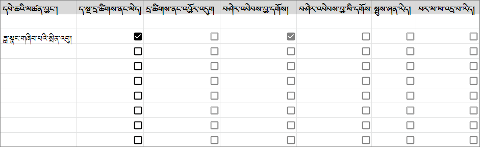 |
| དྲ་ཚིགས་ནང་འབྱོར་འདུག འོན་ཀྱང་། པར་མ་མ་འདྲ་བ་རེད| བཤེར་ཐོར་བཀོད་དེ་བཤེར་འབེབས་བྱ་དགོས། |
| 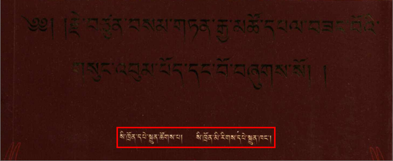 | 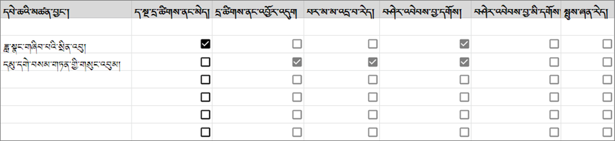|
| དྲ་ཚིགས་ནང་འབྱོར་འདུག འོན་ཀྱང་། སྤུས་ཀ་ཞན་པོ་རེད། | བཤེར་ཐོར་བཀོད་དེ་བཤེར་འབེབས་བྱ་དགོས། |
| | 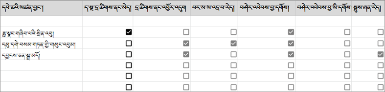 |
| 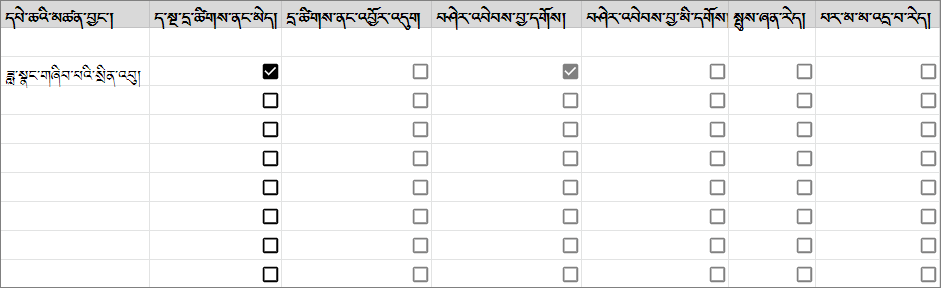 |
| དྲ་ཚིགས་ནང་འབྱོར་འདུག འོན་ཀྱང་། པར་མ་མ་འདྲ་བ་རེད| བཤེར་ཐོར་བཀོད་དེ་བཤེར་འབེབས་བྱ་དགོས། |
| 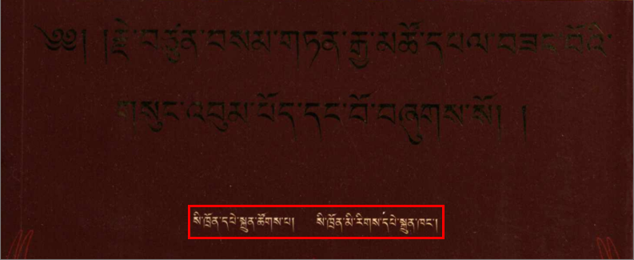 | 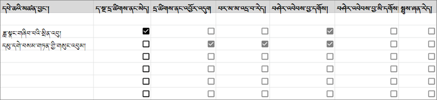|
| དྲ་ཚིགས་ནང་འབྱོར་འདུག འོན་ཀྱང་། སྤུས་ཀ་ཞན་པོ་རེད། | བཤེར་ཐོར་བཀོད་དེ་བཤེར་འབེབས་བྱ་དགོས། |
| | 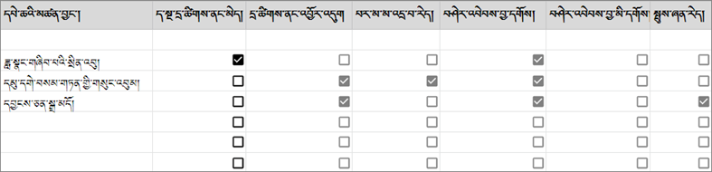 |དཔེ་ཆ་ད་སྔ་ཚོགས་པར་ བྱོར་ཡོད་མེད་ལྟ་སའི་བཙལ་གནས་གཉིས་ཡོད། - དྲ་ཚིགས་རང་གི་ནང་འཚོལ་བ། - དཔེ་ཀློག་མཉེན་ཆས་ནང་འཚོལ་བ།
དང་བོ། ནང་བསྟན་དཔེ་ཚོགས་ལྟེ་གནས་ཀྱི་དྲ་ཚིགས། འདི་ནི་ཚོགས་པའི་དྲ་ཚིགས་ཡིན།tbrc.org
གཉིས་པ། དཔེ་ཀློག་མཉེན་ཆས་ནི་ཆེད་དུ་ཁ་པར་དང་ipad ནང་ངེད་ཚོགས་པའི་དྲ་ཚིགས་ནང་གི་དཔེ་ཆ་རྣམས་བལྟ་ཀློག་བྱེད་ས་ཞིག་ཡིན། གློག་ཀླད་ནང་བཀོལ་མི་ཐུབ། ཀུ་ཤུ་ཁ་པར། ཨིན་ཌོ་མ་ལག
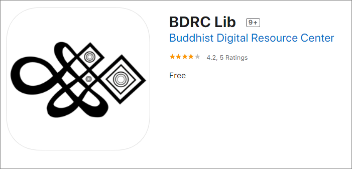
བཤེར་འབེབས་བྱ་དགོས་མིན་འདེམ་གསེས་རེའུ་མིག
དཔེ་ཆ་ཞིག་བཤེར་འབེབས་བྱ་དགོས་མིན་ཐག་གཅོད་བྱེད་སྐབས་གཤམ་གྱི་དཔེ་རིས་ནང་གསལ་ལྟར་བལྟས་ཏེ་ཐག་གཅོད་བྱ་དགོས།
བཤེར་ཐོར་འགོད་ཚུལ་གྱི་དཔེ་མཚོན་རེའུ་མིག
ཐོག་མར་ཁྱེད་ཀྱིས་གློག་ཀླད་ནང་གི་ excel རེའུ་མིག་ནང་ཐོ་འགོད་བྱ་དགོས་པའི་སྡེ་ཚན་གྱི་འགེང་ཤོག་ཅིག་གྲ་སྒྲིག་བྱོས། རྟོག་དཔྱོད་སྐབས་གདན་དོན་རེ་རེ་རྙེད་པ་དང་ཐོ་འགོད་བྱོས།
| དྲ་ཚིགས་ནང་འབྱོར་མི་འདུག | བཤེར་ཐོར་བཀོད་དེ་བཤེར་འབེབས་བྱ་དགོས། |
| ----- | ------ |
| | 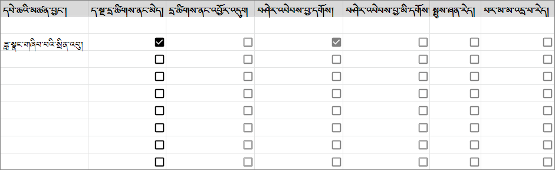 |
| དྲ་ཚིགས་ནང་འབྱོར་འདུག འོན་ཀྱང་། པར་མ་མ་འདྲ་བ་རེད| བཤེར་ཐོར་བཀོད་དེ་བཤེར་འབེབས་བྱ་དགོས། |
| 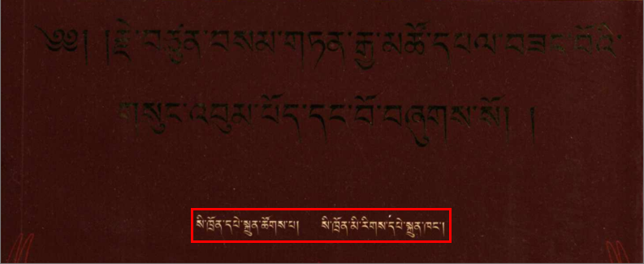 | 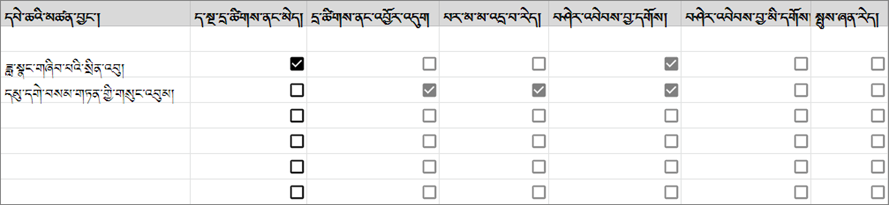|
| དྲ་ཚིགས་ནང་འབྱོར་འདུག འོན་ཀྱང་། སྤུས་ཀ་ཞན་པོ་རེད། | བཤེར་ཐོར་བཀོད་དེ་བཤེར་འབེབས་བྱ་དགོས། |
| | 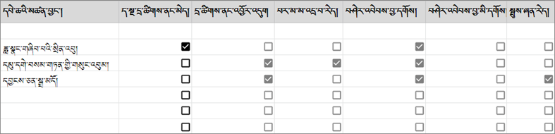 |
དེབ་ཀྱི་རྒྱབ་ཤ་དང་དཔེ་བསྐྲུན་གནས་ཚུལ་མཛད་བྱང་བཅས་ལ་ཁ་པར་གྱིས་པར་བརྒྱབ་ནས་འབྲེལ་མཐུད་པ་ལ་སྐུར།